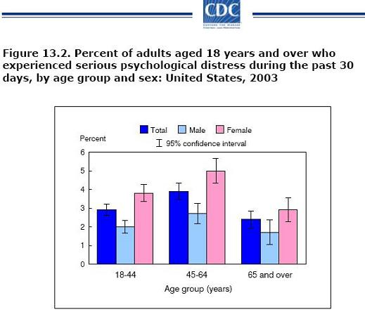

Period Prevalence
Lead Author(s): Jeff Martin, MD
Definition of Period Prevalence
Period prevalence is the number of persons with a specific disease at one point in time divided by total number of persons in the population.
Distinction Between Period and Point Prevalence
The distinction between period prevalence and point prevalence is often not made because most prevalence estimates that you will encounter in the medical literature are point prevalence.
Period prevalence has its uses, however.
- It is, for example, helpful for planning the delivery of health services to know how many persons in a given time period may need those services.
A way to think about period prevalence is as the point prevalence at the beginning of a defined time interval plus whatever incident cases occur during that interval.
Example of Period Prevalence
The following figure from the National Health Interview Survey (NHIS) gives the percent of adults aged 18 or over who experienced psychological distress during the past 30 days by gender and age. (Schiller 2004)

The NHIS is carried out every year (so it doesn’t take as long as the NHANES), but again the point is not how long it takes to conduct the NHIS but what time period does the measurement represent.
- In this case the measurement of disease prevalence is for a specified time period, 30 days, so it is an example of period prevalence, albeit not a particularly long period.
- The same question might have been asked for the past six months and a different prevalence estimate would have been obtained.
One can begin to see how a very short-lived condition will have different a prevalence depending on whether point or period prevalence is being examined and on the length of the time period if period prevalence is being examined.
Reference
#SchillerCardiac
Schiller, J., Coriaty-Nelson, Z., & Barnes, P. (2004). Early release of selected estimates based on data from the 2003 National Health Interview Survey. Hyattsville, MD: National Center for Health Statistics. Available at: http://www.cdc.gov/nchs/nhis.htm. Accessed February 24, 2009.